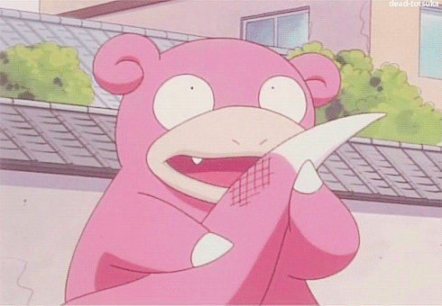

Slowpoke's staart is een van de weinige niet vegetarische voedselbronnen in het Pokemon universum
Het wordt gezien als een delicatesse in de Alola regio
Slowpoke zijn staart valt er van nature na een tijd af, dus het is niet vreemd als je in de jungle loopt en een fel roze staart vind
In Pokemon Sword/Shield kun je de curry "Smoked tail curry" maken.
Dit is een erg leuke curry om te zien als er wat berries bij zitten
Sommige mensen hebben deze kans ook gebruikt om Slowpoke een cannibaal te maken...
Het zou zelfs zijn eigen staart kunnen zijn....
